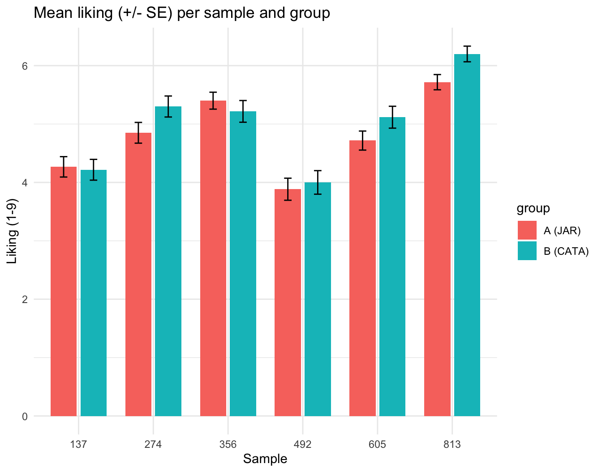
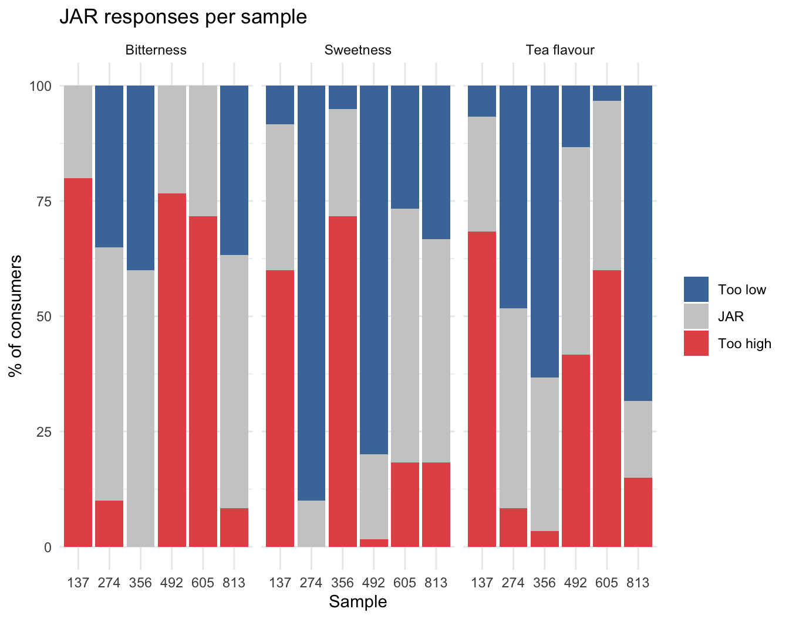
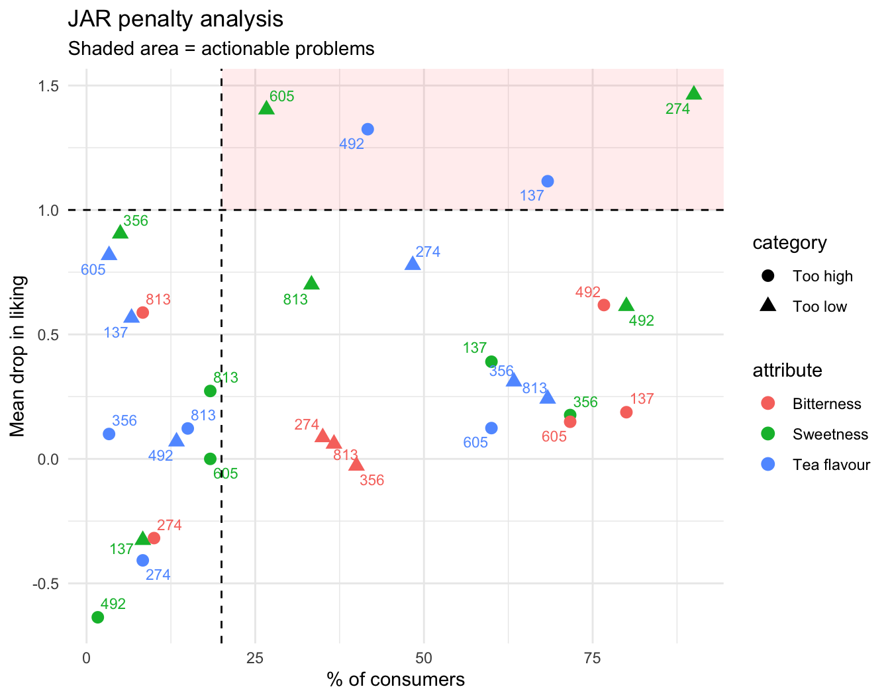
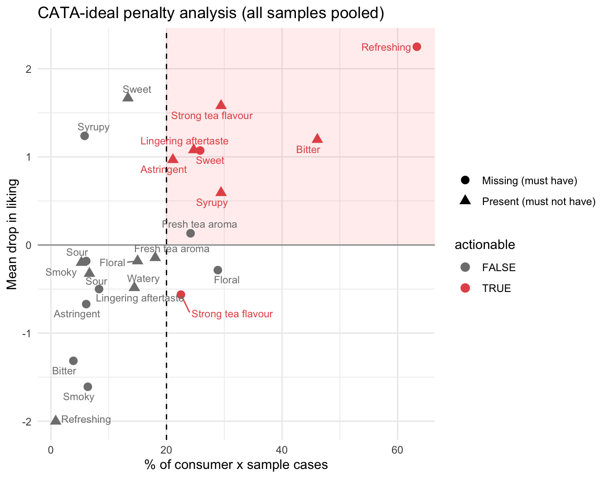

library(readxl)
library(writexl)
library(dplyr)
library(tidyr)
library(ggplot2)
library(ggrepel)4 Project 4 — JAR vs. CATA with an ideal product for iced tea reformulation
Analysis plan (draft) with dummy data
5 Research question
Which diagnostic method gives clearer and more actionable guidance for reformulating a product: Just-About-Right (JAR) scales with penalty analysis, or CATA with an “ideal product” question?
Sub-questions:
- Do the two methods point to the same changes for each product (e.g., “reduce sugar in sample X”)?
- Which method identifies more drivers of (dis)liking?
- Does liking itself differ between the two groups? (it should not, if the methods do not bias the hedonic answers)
Design. Between-subjects, because answering JAR questions can change how people answer CATA (and vice versa):
- Group A (~60 consumers): 9-point liking + JAR scales.
- Group B (~60 consumers): 9-point liking + CATA, then CATA for their ideal iced tea.
6 sweetened iced teas made in the lab: 3 sugar levels (low / medium / high) × 2 tea strengths (weak / strong), 3-digit codes, balanced presentation order.
6 What to read
Main text — Delarue, J., Lawlor, J.B. & Rogeaux, M. (eds.) Rapid Sensory Profiling Techniques. Woodhead Publishing.
| Chapter | 1st ed. (2015) | 2nd ed. (2023) |
|---|---|---|
| The use of rapid sensory methods in R&D and research: an introduction | Ch. 1 | Ch. 1 |
| Check-all-that-apply (CATA) questions with consumers in practice | Ch. 11 | Ch. 12 |
| Ideal profiling as a sensory profiling technique | Ch. 14 | Ch. 15 |
| Free-JARs (JAR logic combined with free description) | — | Ch. 9 |
Chapter numbers differ between editions; check which edition your library holds. “Free-JARs” is only in the 2nd edition.
Key papers for the analyses used here:
- Ares, G., Dauber, C., Fernández, E., Giménez, A. & Varela, P. (2014). Penalty analysis based on CATA questions to identify drivers of liking and directions for product reformulation. Food Quality and Preference, 32, 65-76.
- Rothman, L. & Parker, M.J. (eds.) (2009). Just-About-Right (JAR) Scales: Design, Usage, Benefits, and Risks (ASTM MNL63). ASTM International. — the standard reference for penalty analysis.
7 Google Form setup
Both forms: one response per sample (“Submit another response” after each sample).
7.1 Form A — Liking + JAR
| # | Question | Type | Notes |
|---|---|---|---|
| 1 | Panelist ID | Short answer | Number |
| 2 | Sample code | Dropdown | 6 codes |
| 3 | How much do you like this iced tea overall? | Linear scale 1-9 | 1 = Dislike extremely, 9 = Like extremely |
| 4 | How is the … of this sample? | Multiple-choice grid | Rows: Sweetness, Tea flavour, Bitterness. Columns: 1 Much too low, 2 Somewhat too low, 3 Just about right, 4 Somewhat too high, 5 Much too high |
Ask liking before JAR so the JAR questions do not influence liking.
7.2 Form B — Liking + CATA + ideal
| # | Question | Type | Notes |
|---|---|---|---|
| 1 | Panelist ID | Short answer | Number |
| 2 | Sample code | Dropdown | 6 codes + IDEAL |
| 3 | How much do you like this iced tea overall? | Linear scale 1-9 | Not required (left blank for IDEAL) |
| 4 | Which of these terms describe this sample? | Checkboxes | 12 terms, Shuffle option order |
After the 6 samples, panelists submit one more response with Sample code = IDEAL and tick the terms that describe their ideal iced tea.
CATA terms: Sweet, Syrupy, Bitter, Astringent, Strong tea flavour, Watery, Refreshing, Floral, Smoky, Sour, Lingering aftertaste, Fresh tea aroma.
8 What the exported .xlsx looks like
Form A
| Timestamp | Panelist ID | Sample code | How much do you like…? | How is the … of this sample? [Sweetness] | … [Tea flavour] | … [Bitterness] |
|---|---|---|---|---|---|---|
| 2026-11-05 09:03:12 | 1 | 274 | 6 | 4 Somewhat too high | 3 Just about right | 3 Just about right |
Form B
| Timestamp | Panelist ID | Sample code | How much do you like…? | Which of these terms describe this sample? |
|---|---|---|---|---|
| 2026-11-05 09:03:40 | 101 | 274 | 7 | Sweet, Refreshing, Fresh tea aroma |
| 2026-11-05 09:12:02 | 101 | IDEAL | (blank) | Sweet, Refreshing, Strong tea flavour |
9 Dummy data
Each consumer has their own ideal sweetness and tea strength. Liking drops as a product moves away from that ideal, and the JAR and CATA answers are generated from the same perceptions. Students replace this block with their own exports.
set.seed(2026)
prods <- data.frame(code = c("274","813","356","492","605","137"),
sugar = c(1, 2, 3, 1, 2, 3), # 1 low, 2 medium, 3 high
strength = c(1, 1, 1, 2, 2, 2)) # 1 weak, 2 strong
terms <- c("Sweet","Syrupy","Bitter","Astringent","Strong tea flavour","Watery",
"Refreshing","Floral","Smoky","Sour","Lingering aftertaste","Fresh tea aroma")
jar_lab <- c("1 Much too low","2 Somewhat too low","3 Just about right",
"4 Somewhat too high","5 Much too high")
start <- as.POSIXct("2026-11-05 09:00:00", tz = "Asia/Jakarta")
consumer <- function() list(sug = rnorm(1, 2.0, 0.6), str = rnorm(1, 1.5, 0.4),
bit = rnorm(1, 0.6, 0.3))
perceive <- function(pr) list(sug = pr$sugar + rnorm(1, 0, 0.35),
str = pr$strength + rnorm(1, 0, 0.25),
bit = (pr$strength - 1) * 1.3 + rnorm(1, 0.2, 0.3))
like <- function(c, p) {
l <- 7.4 - 1.5 * abs(p$sug - c$sug) - 1.0 * abs(p$str - c$str) -
1.2 * max(0, p$bit - c$bit) + rnorm(1, 0, 0.9)
round(pmin(9, pmax(1, l)))
}
jar <- function(x, ideal, k) pmin(5, pmax(1, round(3 + k * (x - ideal) + rnorm(1, 0, 0.5))))
# ---- Form A: liking + JAR ----
rowsA <- list()
for (i in 1:60) {
c <- consumer(); t <- start + i * 400
for (j in sample(nrow(prods))) {
p <- perceive(prods[j, ]); t <- t + round(runif(1, 45, 90))
rowsA[[length(rowsA) + 1]] <- data.frame(
Timestamp = t, `Panelist ID` = i, `Sample code` = prods$code[j],
`How much do you like this iced tea overall?` = like(c, p),
`How is the ... of this sample? [Sweetness]` = jar_lab[jar(p$sug, c$sug, 1.0)],
`How is the ... of this sample? [Tea flavour]` = jar_lab[jar(p$str, c$str, 1.2)],
`How is the ... of this sample? [Bitterness]` = jar_lab[jar(p$bit, c$bit, 1.0)],
check.names = FALSE)
}
}
formA <- bind_rows(rowsA)
# ---- Form B: liking + CATA + ideal ----
rowsB <- list()
for (i in 101:160) {
c <- consumer(); t <- start + (i - 100) * 400
for (j in sample(nrow(prods))) {
p <- perceive(prods[j, ]); t <- t + round(runif(1, 40, 80))
L <- like(c, p)
ticked <- terms[c(p$sug > 1.5, p$sug > 2.6, p$bit > 0.9, p$str > 1.6 & runif(1) < .5,
p$str > 1.5, p$str < 1.3 & p$sug < 1.6,
L >= 6 & runif(1) < .8, runif(1) < .2, runif(1) < .05,
runif(1) < .08, p$bit > 1.1 & runif(1) < .6, runif(1) < .3)]
rowsB[[length(rowsB) + 1]] <- data.frame(
Timestamp = t, `Panelist ID` = i, `Sample code` = prods$code[j],
`How much do you like this iced tea overall?` = L,
`Which of these terms describe this sample?` = paste(ticked, collapse = ", "),
check.names = FALSE)
}
ideal <- terms[c(c$sug > 1.4, runif(1) < .05, runif(1) < .1, runif(1) < .1,
c$str > 1.6, runif(1) < .03, runif(1) < .9, runif(1) < .35,
runif(1) < .05, runif(1) < .05, runif(1) < .1, runif(1) < .3)]
rowsB[[length(rowsB) + 1]] <- data.frame(
Timestamp = t + 60, `Panelist ID` = i, `Sample code` = "IDEAL",
`How much do you like this iced tea overall?` = NA,
`Which of these terms describe this sample?` = paste(ideal, collapse = ", "),
check.names = FALSE)
}
formB <- bind_rows(rowsB)
write_xlsx(formA, "P4_FormA_JAR_responses.xlsx")
write_xlsx(formB, "P4_FormB_CATA_responses.xlsx")10 Import and reshape
formA <- read_excel("P4_FormA_JAR_responses.xlsx")
formB <- read_excel("P4_FormB_CATA_responses.xlsx")Form A → liking + JAR scores (1-5) + JAR category.
jarA <- formA %>%
rename(panelist = `Panelist ID`, sample = `Sample code`,
liking = `How much do you like this iced tea overall?`)
names(jarA) <- sub("^How is the \\.\\.\\. of this sample\\? \\[(.*)\\]$", "\\1", names(jarA))
jar_attrs <- c("Sweetness", "Tea flavour", "Bitterness")
jar_long <- jarA %>%
select(panelist, sample, liking, all_of(jar_attrs)) %>%
pivot_longer(all_of(jar_attrs), names_to = "attribute", values_to = "jar") %>%
mutate(jar = as.numeric(substr(jar, 1, 1)),
category = case_when(jar < 3 ~ "Too low", jar == 3 ~ "JAR", TRUE ~ "Too high"))
head(jar_long)Form B → liking + binary CATA, with the ideal attached to every row of the same panelist.
cataB <- formB %>%
rename(panelist = `Panelist ID`, sample = `Sample code`,
liking = `How much do you like this iced tea overall?`,
ticked = `Which of these terms describe this sample?`) %>%
mutate(ticked = ifelse(is.na(ticked), "", ticked))
for (a in terms) cataB[[a]] <- as.integer(grepl(paste0("(^|, )", a, "(,|$)"), cataB$ticked))
ideal <- cataB %>% filter(sample == "IDEAL") %>% select(panelist, all_of(terms))
prodB <- cataB %>% filter(sample != "IDEAL") %>% select(panelist, sample, liking, all_of(terms))
cata_long <- prodB %>%
pivot_longer(all_of(terms), names_to = "term", values_to = "product") %>%
left_join(ideal %>% pivot_longer(all_of(terms), names_to = "term", values_to = "ideal"),
by = c("panelist", "term"))
head(cata_long)11 Analysis
11.1 Liking: are the two groups comparable?
liking_all <- bind_rows(jarA %>% transmute(panelist, sample, liking, group = "A (JAR)"),
prodB %>% transmute(panelist, sample, liking, group = "B (CATA)"))
liking_all %>% group_by(group, sample) %>% summarise(mean = mean(liking), .groups = "drop") %>%
pivot_wider(names_from = group, values_from = mean)fit <- aov(liking ~ sample * group + Error(factor(panelist)), data = liking_all)
summary(fit) # a significant sample:group interaction would mean the method biased liking
Error: factor(panelist)
Df Sum Sq Mean Sq F value Pr(>F)
group 1 7.4 7.401 3.713 0.0564 .
Residuals 118 235.2 1.993
---
Signif. codes: 0 '***' 0.001 '**' 0.01 '*' 0.05 '.' 0.1 ' ' 1
Error: Within
Df Sum Sq Mean Sq F value Pr(>F)
sample 5 320.3 64.06 37.059 <2e-16 ***
sample:group 5 12.0 2.39 1.385 0.228
Residuals 590 1019.9 1.73
---
Signif. codes: 0 '***' 0.001 '**' 0.01 '*' 0.05 '.' 0.1 ' ' 1liking_all %>% group_by(group, sample) %>%
summarise(m = mean(liking), se = sd(liking) / sqrt(n()), .groups = "drop") %>%
ggplot(aes(sample, m, fill = group)) +
geom_col(position = position_dodge(.8), width = .7) +
geom_errorbar(aes(ymin = m - se, ymax = m + se), position = position_dodge(.8), width = .2) +
labs(title = "Mean liking (+/- SE) per sample and group", y = "Liking (1-9)", x = "Sample") +
theme_minimal()
11.2 JAR: distribution of responses
jar_long %>%
mutate(category = factor(category, levels = c("Too low", "JAR", "Too high"))) %>%
count(sample, attribute, category) %>%
group_by(sample, attribute) %>% mutate(pct = 100 * n / sum(n)) %>%
ggplot(aes(sample, pct, fill = category)) + geom_col() +
facet_wrap(~attribute) +
scale_fill_manual(values = c("Too low" = "#4C78A8", JAR = "grey80", "Too high" = "#E45756")) +
labs(title = "JAR responses per sample", y = "% of consumers", x = "Sample", fill = NULL) +
theme_minimal()
11.3 JAR: penalty analysis
For each sample × attribute:
- % of consumers in the Too low and Too high groups;
- mean drop = mean liking of the JAR group − mean liking of the Too low (or Too high) group;
- weighted penalty = mean drop × proportion.
Common decision rule: a problem is actionable when ≥ 20% of consumers are in the non-JAR group and the mean drop is ≥ 1 point on the 9-point scale.
penalty <- jar_long %>%
group_by(sample, attribute) %>%
mutate(jar_mean = mean(liking[category == "JAR"]), n_total = n()) %>%
filter(category != "JAR") %>%
group_by(sample, attribute, category) %>%
summarise(pct = 100 * n() / first(n_total), n = n(),
mean_drop = first(jar_mean) - mean(liking), .groups = "drop") %>%
mutate(weighted_penalty = mean_drop * pct / 100,
actionable = pct >= 20 & mean_drop >= 1 & n >= 5)
penalty %>% arrange(desc(weighted_penalty)) %>% print(n = 12)# A tibble: 31 × 8
sample attribute category pct n mean_drop weighted_penalty actionable
<chr> <chr> <chr> <dbl> <int> <dbl> <dbl> <lgl>
1 274 Sweetness Too low 90 54 1.46 1.32 TRUE
2 137 Tea flavour Too high 68.3 41 1.12 0.762 TRUE
3 492 Tea flavour Too high 41.7 25 1.32 0.552 TRUE
4 492 Sweetness Too low 80 48 0.614 0.491 FALSE
5 492 Bitterness Too high 76.7 46 0.618 0.474 FALSE
6 274 Tea flavour Too low 48.3 29 0.779 0.376 FALSE
7 605 Sweetness Too low 26.7 16 1.40 0.374 TRUE
8 137 Sweetness Too high 60 36 0.390 0.234 FALSE
9 813 Sweetness Too low 33.3 20 0.7 0.233 FALSE
10 356 Tea flavour Too low 63.3 38 0.311 0.197 FALSE
11 813 Tea flavour Too low 68.3 41 0.241 0.165 FALSE
12 137 Bitterness Too high 80 48 0.188 0.15 FALSE
# ℹ 19 more rowsggplot(penalty, aes(pct, mean_drop, colour = attribute, shape = category)) +
annotate("rect", xmin = 20, xmax = Inf, ymin = 1, ymax = Inf, alpha = .08, fill = "red") +
geom_point(size = 3) +
geom_text_repel(aes(label = sample), size = 3, show.legend = FALSE) +
geom_vline(xintercept = 20, lty = 2) + geom_hline(yintercept = 1, lty = 2) +
labs(title = "JAR penalty analysis", subtitle = "Shaded area = actionable problems",
x = "% of consumers", y = "Mean drop in liking") +
theme_minimal()
11.4 CATA + ideal: penalty analysis (Ares et al., 2014)
For each term, every consumer × sample falls in one of four cells:
| Ideal: yes | Ideal: no | |
|---|---|---|
| Product: yes | P(yes) I(yes) — OK | P(yes) I(no) — term present but should not be |
| Product: no | P(no) I(yes) — term missing but should be there | P(no) I(no) — OK |
- “Must have” penalty = liking[P yes, I yes] − liking[P no, I yes]
- “Must not have” penalty = liking[P no, I no] − liking[P yes, I no]
Each penalty is tested with a t-test. A term matters when the penalty is significant and affects ≥ 20% of consumers.
cata_pen <- bind_rows(lapply(terms, function(a) {
d <- cata_long %>% filter(term == a)
ok_yes <- d$liking[d$product == 1 & d$ideal == 1]
miss <- d$liking[d$product == 0 & d$ideal == 1]
ok_no <- d$liking[d$product == 0 & d$ideal == 0]
extra <- d$liking[d$product == 1 & d$ideal == 0]
tt <- function(x, y) if (length(x) > 2 && length(y) > 2) t.test(x, y)$p.value else NA
data.frame(term = a,
type = c("Missing (must have)", "Present (must not have)"),
pct = 100 * c(length(miss), length(extra)) / nrow(d),
mean_drop = c(mean(ok_yes) - mean(miss), mean(ok_no) - mean(extra)),
p = c(tt(ok_yes, miss), tt(ok_no, extra)))
}))
cata_pen <- cata_pen %>%
mutate(weighted_penalty = mean_drop * pct / 100,
actionable = !is.na(p) & p < 0.05 & pct >= 20)
cata_pen %>% arrange(desc(weighted_penalty)) %>% mutate(across(where(is.numeric), ~ round(., 3)))ggplot(cata_pen %>% filter(!is.na(mean_drop)),
aes(pct, mean_drop, colour = actionable, shape = type)) +
annotate("rect", xmin = 20, xmax = Inf, ymin = 0, ymax = Inf, alpha = .08, fill = "red") +
geom_hline(yintercept = 0, colour = "grey60") + geom_vline(xintercept = 20, lty = 2) +
geom_point(size = 3) + geom_text_repel(aes(label = term), size = 3, show.legend = FALSE) +
scale_colour_manual(values = c(`TRUE` = "#E45756", `FALSE` = "grey50")) +
labs(title = "CATA-ideal penalty analysis (all samples pooled)",
x = "% of consumer x sample cases", y = "Mean drop in liking", shape = NULL) +
theme_minimal()
11.5 CATA + ideal: where does each sample deviate from the ideal?
For the actionable terms, the % of consumers whose description of a sample differs from their ideal tells you which samples to change.
act <- cata_pen %>% filter(actionable)
cata_by_sample <- cata_long %>%
inner_join(act %>% select(term, type), by = "term") %>%
group_by(sample, term, type) %>%
summarise(pct_deviating = 100 * mean(
ifelse(type == "Missing (must have)", product == 0 & ideal == 1,
product == 1 & ideal == 0)), .groups = "drop")
cata_by_sample %>%
mutate(label = paste0(term, ifelse(type == "Missing (must have)", " (missing)", " (present)"))) %>%
select(sample, label, pct_deviating) %>%
pivot_wider(names_from = label, values_from = pct_deviating) %>%
mutate(across(-sample, ~ round(., 0)))11.6 Comparing the two methods: recommendations per sample
jar_rec <- penalty %>% filter(actionable) %>%
mutate(rec = paste(ifelse(category == "Too high", "reduce", "increase"), tolower(attribute))) %>%
group_by(sample) %>% summarise(JAR = paste(rec, collapse = "; "))
cata_rec <- cata_by_sample %>% filter(pct_deviating >= 20) %>%
mutate(rec = paste0(ifelse(type == "Missing (must have)", "add ", "remove "), tolower(term))) %>%
group_by(sample) %>% summarise(CATA = paste(rec, collapse = "; "))
recs <- data.frame(sample = sort(unique(jar_long$sample))) %>%
left_join(jar_rec, by = "sample") %>% left_join(cata_rec, by = "sample") %>%
mutate(across(c(JAR, CATA), ~ ifelse(is.na(.), "no change needed", .)))
recs11.6.1 Summary table for the poster
data.frame(
Criterion = c("Actionable problems found (sample x attribute)",
"Tells the DIRECTION of change?",
"Detects attributes not anticipated by the researcher?",
"Questions per sample"),
JAR = c(sum(penalty$actionable), "Yes (too low / too high)",
"No (only the 3 JAR attributes)", "1 liking + 3 JAR"),
CATA = c(nrow(act), "Indirectly (present vs. absent)",
"Partly (any of the 12 terms)", "1 liking + 12 terms (+ ideal once)"))12 Interpretation
With the dummy data (your numbers will differ):
- Liking does not differ systematically between groups, so the two methods can be compared fairly.
- JAR penalty analysis flags 4 actionable problems. The largest is sample 274: sweetness too low for 90% of consumers, costing 1.5 liking points. Note that many samples have a large % of non-JAR consumers but a small mean drop: those consumers notice the problem but it does not hurt their liking much, so it is not a priority.
- CATA-ideal analysis points in similar directions with different words: Sweet missing in the low-sugar samples, Bitter, Astringent and Strong tea flavour present in the strong samples, Syrupy present in the high-sugar ones.
- Refreshing comes out as the biggest “must have” penalty. Be careful: consumers may tick Refreshing because they like a sample, not the other way round. CATA penalties show association, not cause. A term like Refreshing is a consequence of the recipe, not something you can add directly.
How to write the conclusion.
- JAR gives a direct, easy-to-act-on direction (“reduce sugar”) but only for the attributes you chose in advance, and asking JAR questions may make consumers more analytical.
- CATA + ideal covers more attributes and can reveal unexpected drivers (here, Refreshing). But the direction of change must be inferred: “Syrupy is present but should not be” means “reduce sugar”, which requires product knowledge to translate.
- Where the methods disagree, look at the % of consumers affected: small groups (< 20%) are not a reason to reformulate.
- In practice the two are complementary: CATA + ideal to discover which attributes matter, JAR to fine-tune the level of the few key attributes.
Questions to discuss in class
- Why do we require at least 20% of consumers and a mean drop of at least 1 point before calling a problem actionable?
- A sample has 30% “too sweet” and 30% “not sweet enough”. What does this mean, and should you change the sugar level?
- Why is a between-subjects design used here, when Projects 2 and 3 use within-subjects designs?